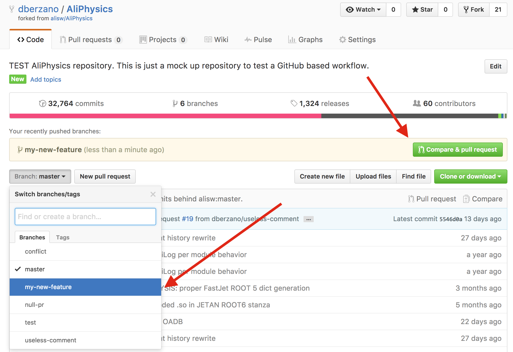
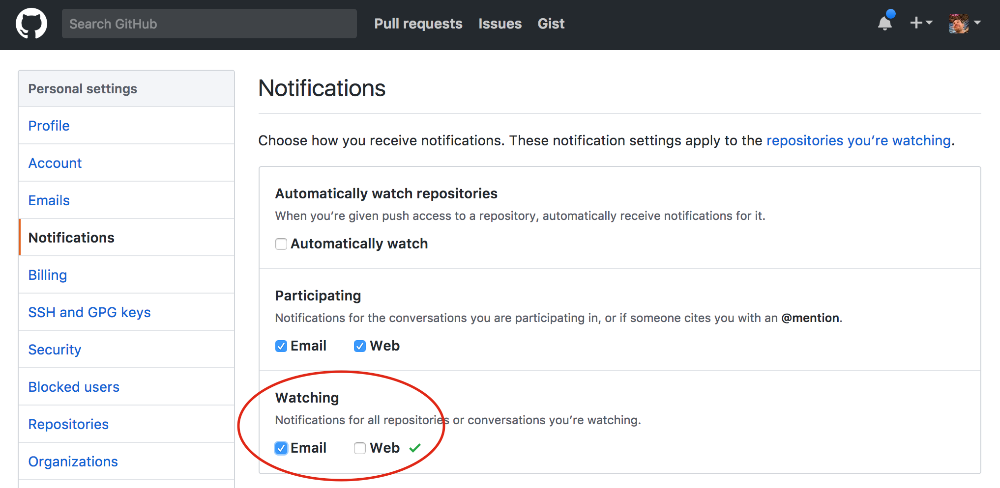
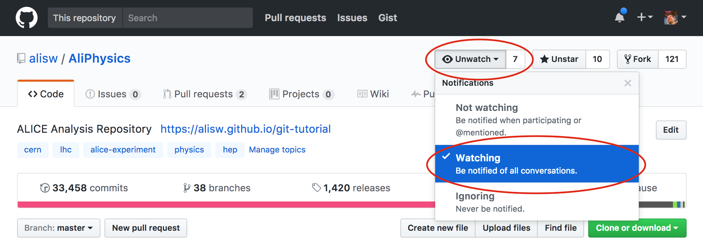

Advanced tutorial
This guide is meant to be a set of advanced topics regarding the ALICE Github workflow. If you are looking for a more step-by-step guide on how to get started and propose code changes to AliPhysics, please start from the basic GitHub workflow.
I want to use the command line!#
If you find the web based workflow not matching your taste, GitHub offers the
possibility to use a command-line based workflow as well via a utility called
hub .
Install hub#
On macOS you can install it with brew:
On Linux you can use the precompiled
releases. After you have installed
hub, the hub command will be available. Note that the hub
documentation suggests you configure git as an
alias to hub in your shell configuration:
This way you can “extend” the git command functionalities with the ones
offered by hub seamlessly. We will not assume the alias is configured in this
document.
Forking and cloning the repository#
In order to fork a repository you can use hub fork and hub clone. The
following example clones the official AliPhysics repository and configures your
own fork (the user.github Git configuration parameter must be set as
suggested in the basic workflow documentation). Note that your
fork is created on your GitHub account in case it does not exist:
Creating a pull request#
The second step to request your changes to be tested and reviewed in order to be included upstream. This is done by typing:
The command above allows you to do so without leaving the terminal. The output of the command above will be a URL like:
If you copy-paste it to your browser you will see the GitHub interface for the opened pull request, which is the same as if you had opened it via the web interface.
How to write a pull request#
Try to be short (stay within 50 characters) and concise in the title, and save any elaboration for the description.
A good example is:
- Title: Fix missing particles in the decay table
- Description: Warning messages about missing particle entries during the ppbench are fixed.
A bad example is:
- Title: A fix
- Description:
You should elaborate what the fix is for at least.
Another bad example is:
- Title: Fix missing particles in the decay table that caused ppbench to complain a lot with warning messages
- Description:
The title is too long, and most of what it says can be moved to the description field.
How to use large data files for analysis#
Some large OADB files were removed from AliPhysics and they are no longer available in the Git repository. Those files are not lost; they have been moved to the following EOS location, which is accessible from lxplus:
We have preserved the same directory structure found on AliPhysics, and the
same permissions: for instance, PWGLF is writable by all members of
alice-svn-pwglf (whose members can be edited by the group conveners).
Every day, in concomitance with the AliPhysics daily tag (at 4pm Geneva time), this folder is snapshotted on CVMFS under the following path:
carrying the same name as the corresponding AliPhysics tag. Moreover, at every AliRoot/AliPhysics production release, we also snapshot at:
where the last component is the AliPhysics tag name.
CVMFS brings the advantage to make data access from Grid jobs reliable and faster due to caching (files unchanged in two different snapshots are not downloaded twice).
In order to profit from the separate storage for large files we have created an interface in AliRoot to allow transparent access to OADB files using a relative path. For instance, if you want to access the following large OADB data file:
you can do:
The static function AliDataFile::GetFileNameOADB returns the first accessible
full URL of the OADB file by finding the first match from the following ordered
list of paths:
$OADB_PATH/<file>$ALICE_DATA/OADB/<file>$ALICE_PHYSICS/OADB/<file>/cvmfs/alice.cern.ch/data/prod/v5-XX-YY-01/OADB/<file>(for Grid jobs, or with CVMFS installed)/cvmfs/alice.cern.ch/data/analysis/YYYY/vAN-YYYYMMDD/OADB/<file>(for Grid jobs, or with CVMFS installed)root://eospublic.cern.ch//eos/experiment/alice/analysis-data/OADB/<file>
This means that for laptop analysis it will always be possible to access data files, somehow, and in a transparent fashion. If you want to have your OADB data locally, you can download it from lxplus:
export OADB_PATH=/path/to/my/local/oadb
rsync -av --delete cern_user@lxplus.cern.ch:/eos/experiment/alice/analysis-data/ $OADB_PATH/
Trailing slashes are important to rsync! Do not forget them!
Note that the variable $OADB_PATH must be exported to the environment where
you run your local analysis in order to make it visible to the job.
Non-OADB data files#
The same EOS path has also PWG-specific directories, outside the OADB one, for other analysis-specific data. The following interface can be used to access files from there:
Note the difference between
GetFileName()andGetFileNameOADB().
In this case, the file will be searched in the following locations in order:
$ALICE_DATA/<file>$ALICE_PHYSICS/<file>/cvmfs/alice.cern.ch/data/prod/v5-XX-YY-01/<file>(for Grid jobs, or with CVMFS installed)/cvmfs/alice.cern.ch/data/analysis/YYYY/vAN-YYYYMMDD/<file>(for Grid jobs, or with CVMFS installed)
Git editors plugins#
Many Git plugins exist in order to improve your Git workflow from within your favorite editor. Examples of what you can do with such plugins are seeing what parts of code were added or removed by you before committing them, or perform the commit of some portions of your modifications.
Work with multiple branches#
The basic workflow we suggest is to use a single branch and develop one feature
at a time. If you follow this workflow then your local branch will be called
master, and so are called the remote working branch on your fork, and the
remote upstream branch.
You may want to develop multiple features at the same time because you do not want to wait for one feature to be merged before proceeding, for instance.
To do so, the first thing to do is make sure your local master branch is
up-to-date:
Now from your master branch, spawn a different one, and name it explicitly:
The git checkout -b command creates the my-new-feature branch (the name is
arbitrary) and moves you to it. You can check at any time what is your current
branch at any time with:
which will give you something like:
At this point you can start developing your code, and make your commits as usual
with git commit. When it comes the time for pushing, you need to tell Git that
you want to push your current branch to a remote branch with the same name (for
simplicity) on your remote fork. This is done by:
Note that all subsequent pushes from this branch can be simply done with:
as you have already told Git what is the corresponding upstream branch once.
When you need to create a pull request you can simply do it from the command line in case you have Hub installed:
and it will return you the link (to copy and paste into your browser) to the GitHub page corresponding to the newly created pull request. In case you want to use the interface, go to your fork from a browser:
https://github.com/\<your-github-username>/AliPhysics
From the web interface you will see something like the following:

If you have recently pushed, which is the case most of the time, GitHub tells you what is your branch name and proposes you to open the pull request right away, as you can see from the yellow box. You just need to press the green button indicated by the red arrow. This is very convenient.
In case you are not presented with a direct link, then use the dropdown to select your branch explicitly (see the other red arrow). Once you have done that just click the "New pull request" button next to the dropdown and continue with the normal workflow.
As explained already in order to amend or integrate an open pull request just keep committing and pushing on the corresponding feature branch.
While you are working on a certain feature on a branch different from master
you can work on other features. You don't need to push your current changes,
and you don't need to open a pull request either: just commit all your
changes with, for instance:
in order to be able to cleanly switch to a different branch (if you don't want to commit you can use the stash too).
Now switch back to master, update it, and create a new branch from there:
You can now follow the same workflow, by keeping in mind that you can switch
back and forth using git checkout (without the -b option this time).
It is important you create your feature branches from an updated
master, and not from other feature branches, in order to avoid confusion and in order to avoid opening different pull requests with overlapping contents.
The advantage of this workflow is that you will never work in your master
branch (i.e. you will never perform git push from there): your changes and
the upstream ones are clearly separated.
Clean up feature branches#
Once your pull requests get merged, you can delete both your local feature branch and the remote counterpart. Note that this is completely optional.
To delete your local branch, first move to the master and update it:
then delete it:
If your branch was merged to master then Git will not complain. If your
branch was not merged, Git will prevent you from accidentally delete it (you
can force by using -D instead of -d if you really know what you are doing).
Now you can delete the remote one (this is a dangerous and irreversible operation):
It's the : that does the trick (it's not a typo).
Port unpushed old commits to GitHub#
In case you have local Git commits you did not push in your old AliPhysics repository and you would like to push them to GitHub now, you can create a "patch" from your old local repository and apply it on top of your local GitHub copy of AliPhysics.
Go in your old AliPhysics repository (assumed to be in ~/alice-old):
The HEAD^1 means: take the first commit on top. If you have more than one
commit to port, replace 1 with the appropriate number.
You will find in your current directory a number of .patches files. If you
have your new AliPhysics directory under ~/alice, you can go there and apply
all of them at once, after making sure you have all the upstream changes
locally:
cd ~/alice
git checkout master
git pull --rebase upstream master
git am ~/alice-old/AliPhysics/*.patch
Note that this command assumes that the only .patches files you have in your
old AliPhysics directory are the ones you have just created with git
format-patch.
At this point you can push to your local fork and create a pull request:
The hub command works if you have the command line tool installed, otherwise
just follow the web-based procedure.
Rebuild an old AliRoot/AliPhysics release#
GitHub clones are only valid for building AliRoot/AliPhysics releases from v5-09 on. Due to the repository cleanup, checking out an older version will lead to inconsistent results.
Suppose you want to build version v5-08-18 of AliRoot (corresponding to
v5-08-18-01 of AliPhysics). In a separate directory, called ~/alice-legacy,
you can do:
Then you can explicitly checkout the versions you need:
cd ~/alice-legacy/AliRoot
git checkout v5-08-18
cd ~/alice-legacy/AliPhysics
git checkout v5-08-18-01
Now you can run aliBuild as usual:
The trick is using the recipes set (alidist) from the branch IB/v5-08/prod,
which has the correct pointers to the frozen old clones of AliRoot and
AliPhysics.
Use the reference OCDB#
Our production OCDB is stored on CVMFS and AliEn, however we also have a reference OCDB which used to be part of AliRoot. The reference OCDB is no longer there: it can now be found at this separate Git repository.
To use the new OCDB with AliPhysics, you first need to build the package:
When you enter the environment, load it as extra package:
The OCDB will be available at the following path:
so you will need to update your paths accordingly. If you don't use aliBuild you can simply clone the package and manually export the environment variable:
cd ~/alice
git clone --origin upstream https://gitlab.cern.ch/alisw/AliRootOCDB.git
export ALIROOT_OCDB_ROOT=$PWD/AliRootOCDB
Note that
ALIROOT_OCDB_ROOTis the toplevel directory containing in turn theOCDBdirectory with the calibration files.
Setup a Git credentials cache#
While compiling the AliRoot/AliPhysics software chain you might be asked several times to input your CERN username and your password. This is because some of the required software components have licensing restrictions and cannot be made publicly available, so authentication is an inevitable consequence. This happens for instance with the DPMJET generator.
To prevent automated installations from bothering you with multiple password requests, you can set up a Git credentials cache.
You can do (only once):
to tell Git to save in memory all inputted credentials for one day. You will be prompted for your password only once in 24 hours, or if your password changes and the cached one is no longer valid.
The cache duration can be configured with the --timeout switch and it is is
expressed in seconds.
A very unsafe option is to permanently store your password in
~/.git-credentials: you will be prompted only once, and the password will be
forever stored there in clear text.
Note: this solution is not good for your laptop. It is meant to target clusters with unattended installation systems.
If you are on macOS you can also save your Git password inside your Keychain:
More information on caching Git credentials can be found on the GitHub documentation: the documentation applies also to repositories not hosted on GitHub.
Get notified for all changes#
Email notifications are handled by GitHub and will be sent to the email you have linked to your GitHub account.
If you want to be notified for every activity on a certain repository, you first need to make sure "watch" notifications are enabled. Go to the GitHub notification settings page for your account, and enable email notifications for Watching:

A green tick will appear next to the checkboxes to confirm your settings have been saved (there is no "save settings" button).
Note that in the GitHub notification settings you can granularily specify what are the events that trigger a notification. You can for instance be notified only for pushes or merges, and not for every comment.
Note that independently from your "Watch" settings, you will continue receiving emails if you are @mentioned if the Participating settings are ticked.
Navigate now to the repository you want to follow, for instance AliPhysics and on the dropdown on top select Watch to be notified of all activities.
